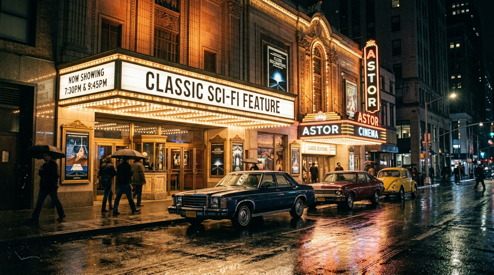

GLOBAL RECALL NETWORK
Memory Drift Atlas
Explore where collective memories converge, conflict with archival records, and remain unresolved.
Space Invaders 1978 Arcade Token & Coin Slot Tone
Personal recollections of Austin's Main Street arcade grand opening, featuring the iconic metallic token dispenser and custom sound chip tone.
42 Blind Recalls
Austin, TX (City)

1977 Cinema Marquee "Episode IV" Subtitle Divergence
Widespread shared recollections of seeing "Episode IV: A New Hope" on theatrical marquees in May 1977, diverging from documented July 1981 re-release prints.
89 Blind Recalls
Global Distribution
The Unlogged London Community Pirate Broadcast
Independent recollections of a short-range FM broadcast during the autumn 1981 power outage. Contemporaneous cassette tapes under review.
18 Blind Recalls
London, UK (City)
Shinjuku Underground Synth Jam Session 1977
First-person account of an early prototype modular synthesizer demonstration in Tokyo. Ticket stub and photographic print archived.
14 Blind Recalls
Tokyo, JP (Neighborhood)